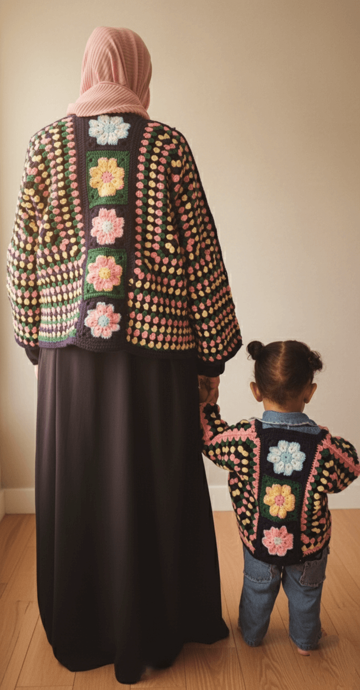

Handmade Mom & Daughter Granny Square Cardigans (Set)
Price: R1200
Stock Availability: 1 item available (Made-to-Order)
Product Description
A matching mother-and-daughter cardigan set made with classic granny squares in a modern design. Perfect for creating lasting memories and twinning in style. Each piece is carefully crocheted to bring out vibrant colors and comfort.
CUSTOMIZATION AVAILABLE: Because it’s handmade, completion takes approximately 3–4 weeks (excluding delivery time). We can customize the colors to your desire! Just specify your chosen palette when placing your order.

Detailed Product Information
| Feature | Details |
|---|---|
| Material | Cotton Acrylic Blend Yarn |
| Size | Adult Meduim, Kid 2years |
| Weight | Approx. 900g |
| Care Instructions | Hand wash cold, lay flat to dry |
| Availability | Made to Order (3-4 Weeks) |
| Custom Color Option | Yes, fully customizable upon order |
| Product Code | FC099 |